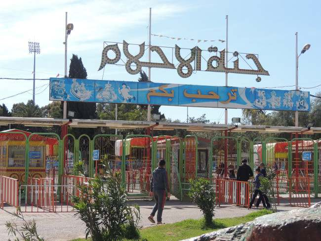
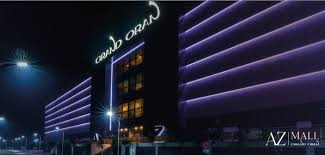
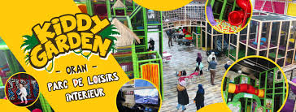
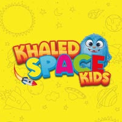
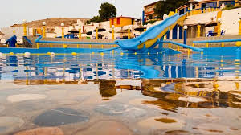
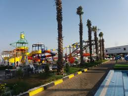
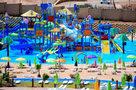
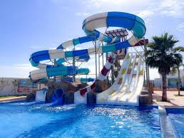

Liste des Parcs
-

Manège Elhamri -

🎡 AZ Grand Oran -
 🏰cool Park
🏰cool Park
-

🦒 Kiddy Garden -

🎡 Khaled space kids -

🌊 Boukaa Beach -

💦 Aquaparc Rodina -

🏊 Aquaparc Krichtel -

🌴 Aquaparc AZ